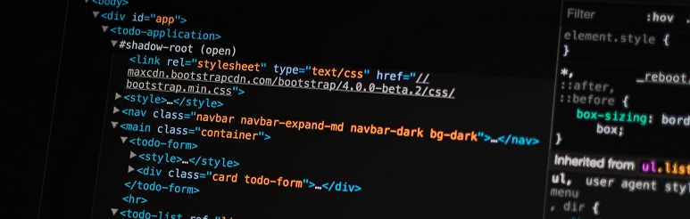

Sobre mim
Estudante de Análise e Desenvolvimento de Sistemas, apaixonado por tecnologia desde o hardware ao software, focado em desenvolvimento front-end e em busca do meu primeiro trabalho (estágio) na área de T.i para adquirir conhecimento e me especializar. Atualmente Trabalhando com eletrônica no Laboratório de manutenção na empresa (Atual System). Fui admitido em setembro de 2018, passei por todos os setores da empresa, adquirindo conhecimento de todos os processos, desde o recebimento, manutenção, instalações e configurações finais e expedições, podendo aprender como é trabalhar em equipe, lidar com pessoas, ter ética, organização (5s), comprimento de horários e entregas, ultililização do sistema ERP de processos entre outros aprendizados. Além desta experiência, atuei também como auxiliar de Tecnologia na aplicação do (Enem Digital - 2021 - Cesgranrio), responsável pela configuração dos computadores e instalação do sistema para o recebimento dos candidatos participantes no local de realização da prova. Para me qualificar tenho feito vários cursos na área com o objetivo de aplicar e reter o conhecimento adquirido!